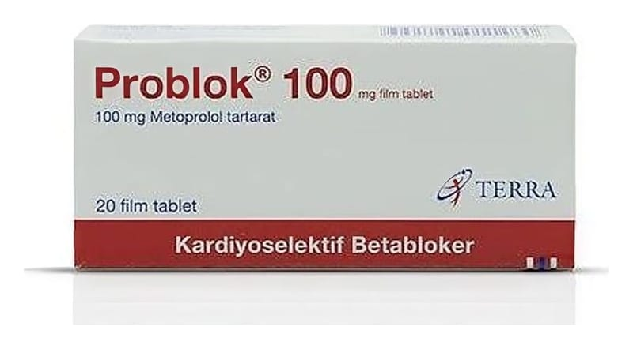

Problok 100 mg Film Kaplı Tablet, 20 Adet

Ne için kullanılır
KT · Bölüm 12. PROBLOK' u kullanmadan önce dikkat edilmesi gerekenler 3. PROBLOK nasıl kullanılır? 4. Olası yan etkileri nelerdir? 5. PROBLOK'un saklanması
Başlıkları yer almaktadır. 1.PROBLOK nedir ve ne için kullanılır? PROBLOK
tabletler beyaz, bikonveks, bir yüzü çentikli yuvarlak film kaplı tabletler halindedir. Her bir tablet etkin madde olarak 100 mg metoprolol tartarat içerir. PROBLOK, 20 adet tablet içeren ambalajlarda takdim edilmektedir. PROBLOK beta-blokörler olarak adlandırılan ilaç grubuna dahildir. Bu ilaçlar kan damarlarınızı gevşeterek toplardamarlarınızdaki (venlerinizdeki) kan basıncını düşürürler.
Bu ilaçlar çeşitli tıbbi sorunlarda kullanılırlar: • Yüksek kan basıncının tedavi edilmesi için, • Egzersiz ile tetiklenen göğüs ağrısı (Angina) tedavisi için,
• Düzensiz kalp atımlarının düzeltilmesi ve kalbin düzenli atmaya devam etmesinin sağlanması için, • Bir kalp krizi sonrasında kalbin korunmasına yardımcı olmak için, • Tamamlayıcı tedavinin bir parçası olarak tiroid bezinin aşırı çalışmasının tedavi edilmesi için, • Migrenin önlenmesi (bir baş ağrısı tipi) için, • Sinirsel gerginlik ya da anksiyetenin neden olduğu çarpıntının tedavi edilmesi için,
PROBLOK ile tedaviniz sırasında takip: • Kalp rahatsızlığınız varsa, doktorunuz kan testi yapabilir ve kalp fonksiyonunuzu izleyebilir. • Eğer kanınızda yüksek düzeyde şeker (diyabetiniz) varsa, doktorunuz düzenli olarak kanınızdaki şeker düzeyini kontrol edebilir. • Eğer aşırı aktif bir tiroid beziniz varsa, doktorunuz düzenli olarak tiroid ve kalp fonksiyonlarınızı kontrol edebilir. • Başka ilaçlar alıyorsanız ya da kısa zaman önce aldıysanız, doktorunuz bazı kan testleri yapabilir ve kalp fonksiyonunuzu izleyebilir.
PROBLOK’un nasıl etki gösterdiği ya da neden verildiği hakkında herhangi bir sorunuz varsa doktorunuza danışınız.